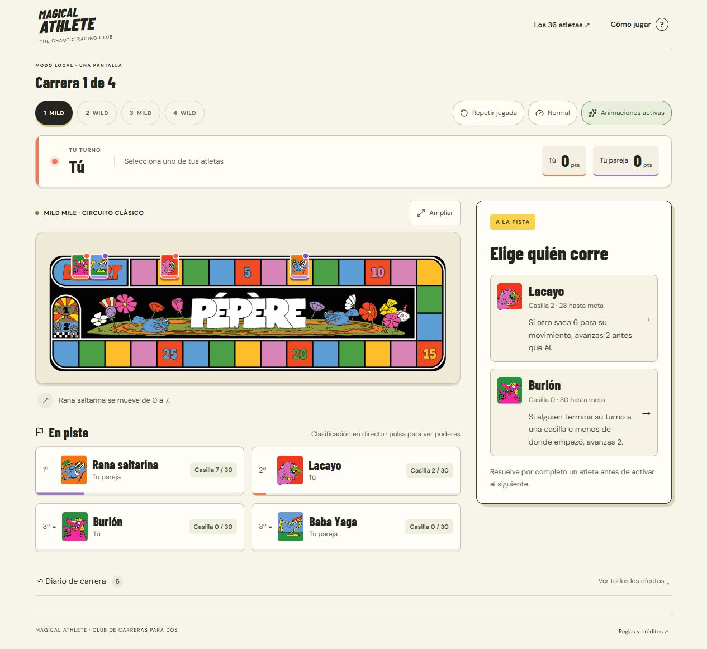

magical-athlete / una idea que se juega

PROYECTO / 01 WEB APP
Magical Athlete
El caos de un juego de mesa, convertido en una experiencia digital para dos. Tablero interactivo, poderes y partidas en la misma pantalla o a distancia.
Proyecto personal. Desarrollado con asistentes de IA bajo mi dirección: yo definí la idea y las decisiones de producto, y revisé y probé cada cambio.